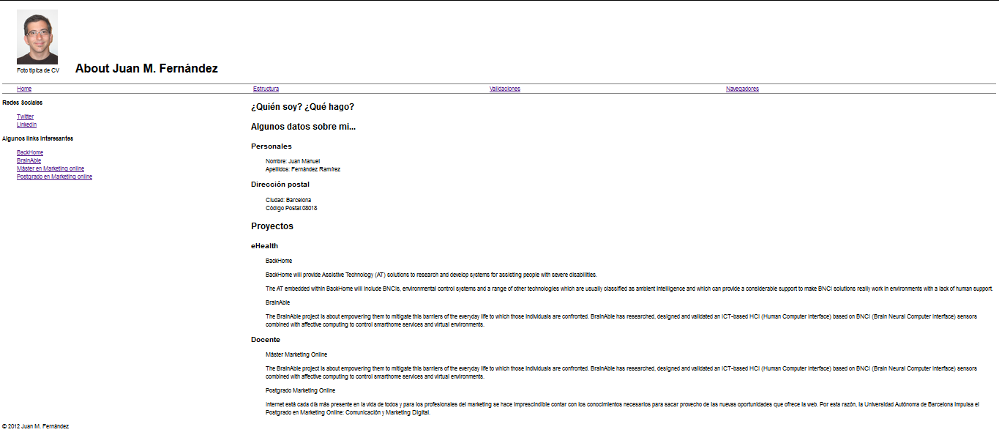
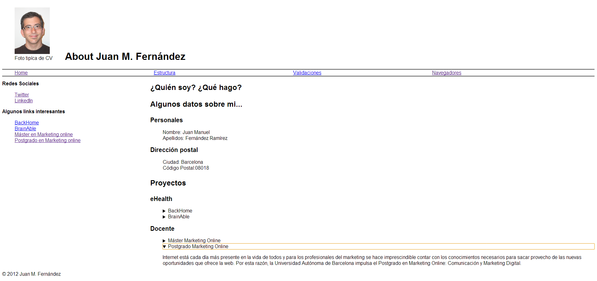
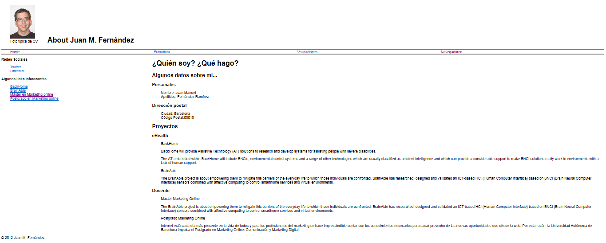
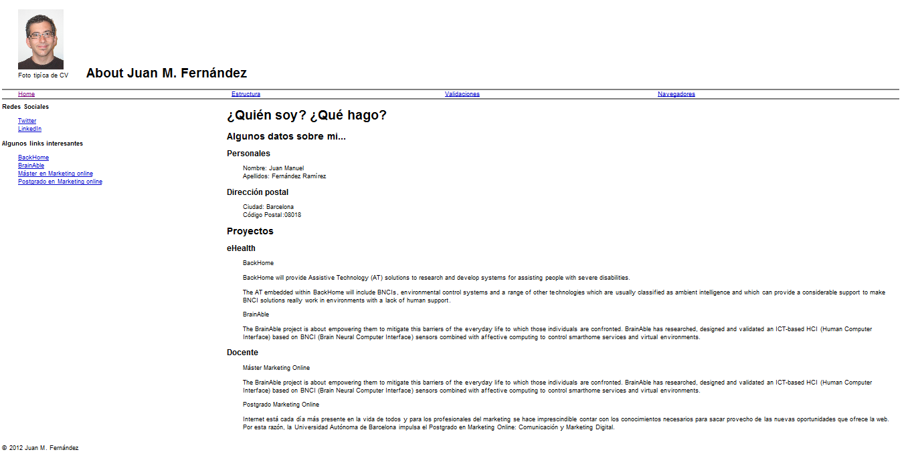

Foto típica de CV
About Juan M. Fernández
¿Cómo se visualiza la página inicial con diferentes navegadores?

Visualización de la página inicial con Firefox 25.0.1

Visualización de la página inicial con Chrome 31.0.1650.57

Visualización de la página inicial con Explorer 11.0.9600.16428

Visualización de la página inicial con Opera 12.16